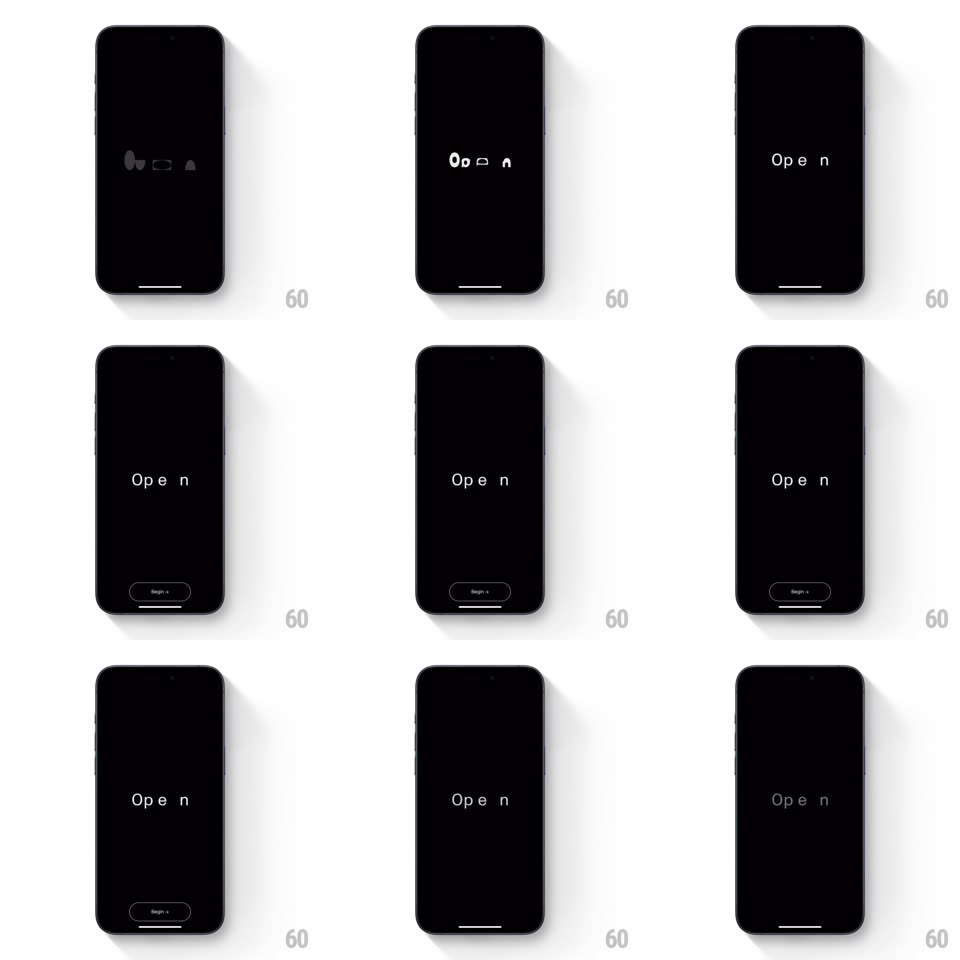

Media
Frame-by-frame

Rebuild this animation 1:1: Open's splash - on a pure black screen, faint abstract shapes flicker and resolve into the spaced wordmark "O p e n", then a small "Begin +1" button rises at the bottom.

Rebuild this animation 1:1: Open's splash - on a pure black screen, faint abstract shapes flicker and resolve into the spaced wordmark "O p e n", then a small "Begin +1" button rises at the bottom.
## Integration
Integration: stack-agnostic spec - springs given as stiffness/damping, timed motions as duration + curve; map every value to your framework and animation library of choice.
## Scene
Black full-screen: centered wordmark "O p e n" in thin white letterspaced type, and eventually a small dark pill button "Begin +1" centered near the bottom. Early frames show gray abstract blobs (a comma, a dash, a triangle) that morph away.
## Motion spec
Pattern: abstract-shapes-to-type resolution.
- Three soft gray shapes (rounded blob, dash, triangle) fade in scattered (300ms), drift toward each other slowly (1s), and morph/dissolve as the letters "O p e n" materialize in their place (crossfade + slight letter-spacing settle, 600ms).
- The wordmark holds still, breathing in opacity very subtly (1 -> 0.85 -> 1, 3s loop).
- After ~2s the "Begin +1" pill rises 16px and fades in (350ms, ease-out).
- Nothing else ever appears; the black stays absolute.
## Calibration
- Letterspacing is wide and deliberate ("O p e n") - the settle animation tightens tracking by ~10%, not more.
- The whole intro is quiet: no bounces, no springs with visible overshoot.
## Reduced motion
Shapes crossfade directly to the wordmark; button fades in.
## Don't miss
- The button says "Begin +1" - keep the exact label.
- Shapes and letters are the only elements; no logo, no imagery.